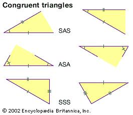
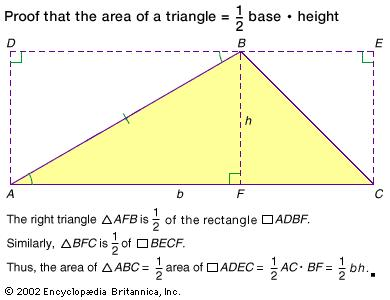
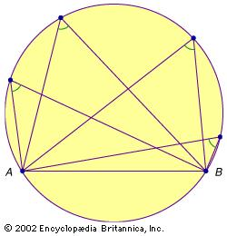

Euclid of Alexandria
Euclid of Alexandria
Euclidean geometry is the study of plane and solid figures on the basis of axioms and theorems written by Euclid. This is taught mainly in high school. This subject is used to apply theorems in special situations and emphasises the importance of proof. One of the things that Euclid realized when it comes to geometry, you need to have a firm and strong foundation. This is why he wrote "Elements". Euclid proposed five common notions for a basis on further logical deductions. With these five common notions he also proposed five unprovable but intuitive principles known as postulates or axioms. Here are examples of postulates or axioms:
- Given two points, there is a straight line that joins them.
- A straight line segment can be prolonged indefinitely.
- A circle can be constructed when a point for its centre and a distance for its radius are given.
- All right angles are equal.
- If a straight line falling on two straight lines make the interior angles on the same side less than two right angles, the two straight lines, if produced indefinitely, will meet on that side on which the angles are less than the two right angles.
All five of these postulates or axioms provide a basis for numerous provable theorems on which Euclid built his geometry.
- Congruent Triangles: (SAS Theorem) is when two sides and the included angle of one triangle are equal to the two sides and the included angle of another triangle, then the triangles are congruent. The other two corresponding theorems are (ASA and SSS). 
- Areas: "By placing a triangle into an appropriate rectangle, one can show that the area of the triangle is half the product of the length of one of its bases and its corresponding height. One can then solve for the area of the polygon by dissecting it into triangular regions." 
- Circles:"A chord AB is a segment in the interior of a circle connecting two points (A and B) on the circumference. When a chord passes through the circle's center, it is a diameter, d. The circumference of a circle is given by πd or 2πr where r is the radius of the circle; the area of the circle is πr2. An important theorem states that for any chord AB in a circle, the angle subtended by any point on the same semiarc of the circle will be invariant. Slightly modified, this means that in a circle, equal chords determine equal angles, and vice versa." 